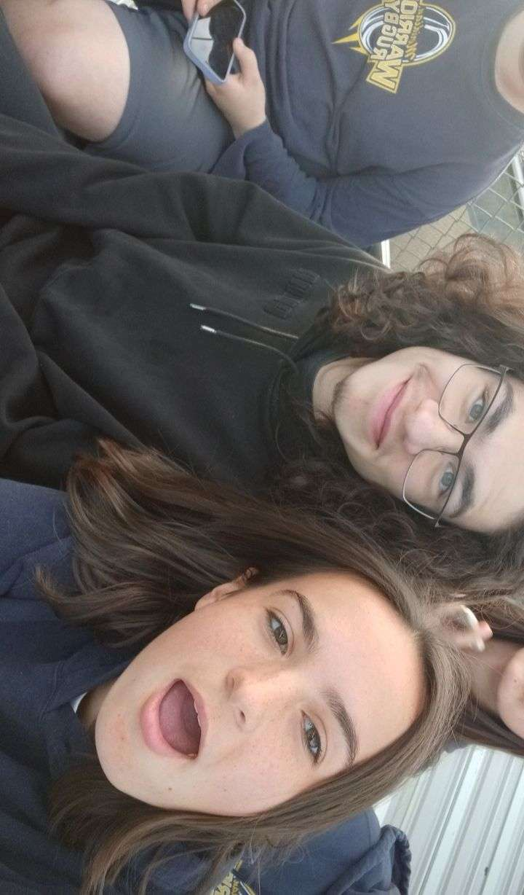
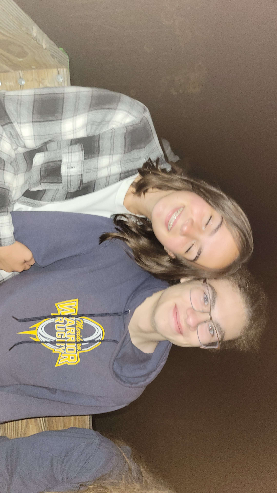
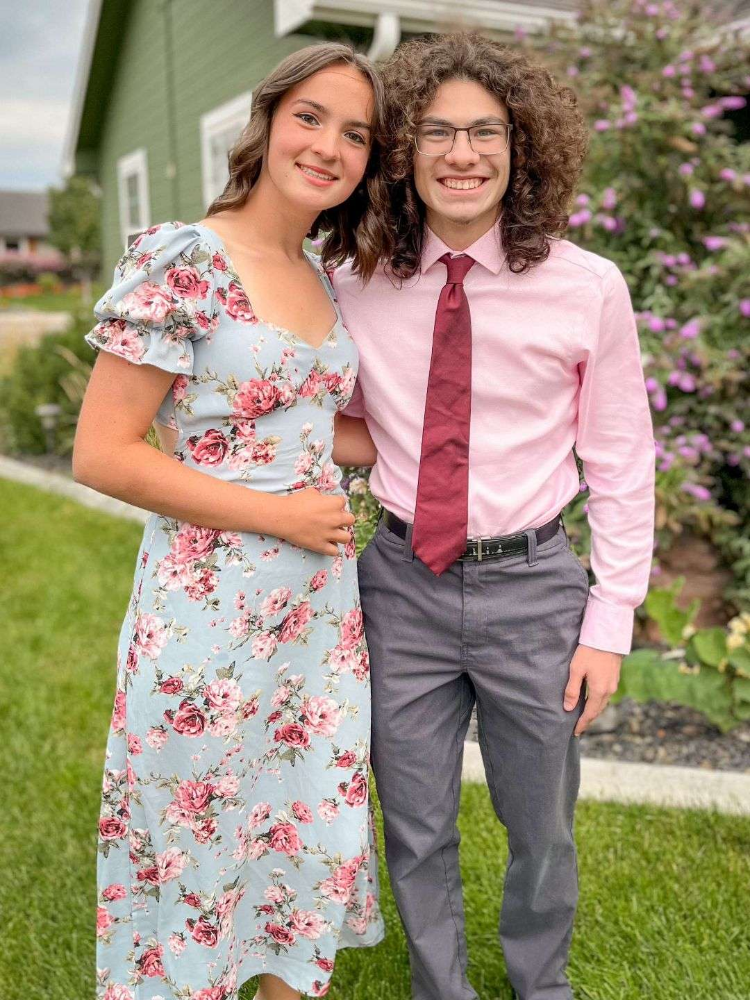
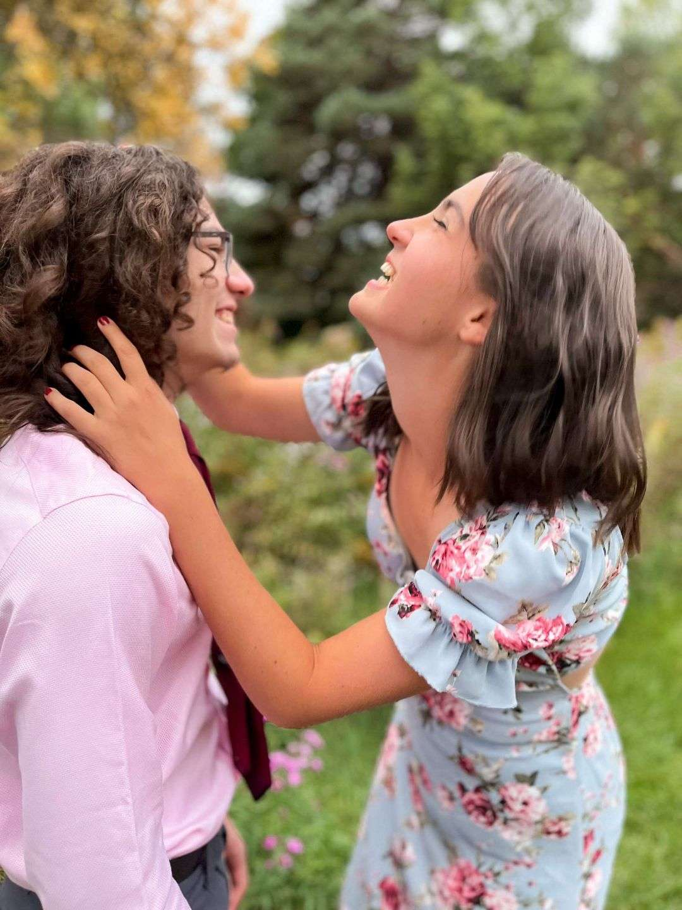

|
|  |  | |
|  |  |
|
|
| Summer helped me feel so much closer to you as we were hanging out a lot more, in fact almost everyday, and I never once got bored of hanging out with you. mostly because I would be looking at you. We went to the fair and went on so many fun rides and took such cute pictures. And we even got Riley the racoon. Oh and we hiked tablerock and I couldn't stop smiling seeing you grab the flowers. | |||
| BACK | |||